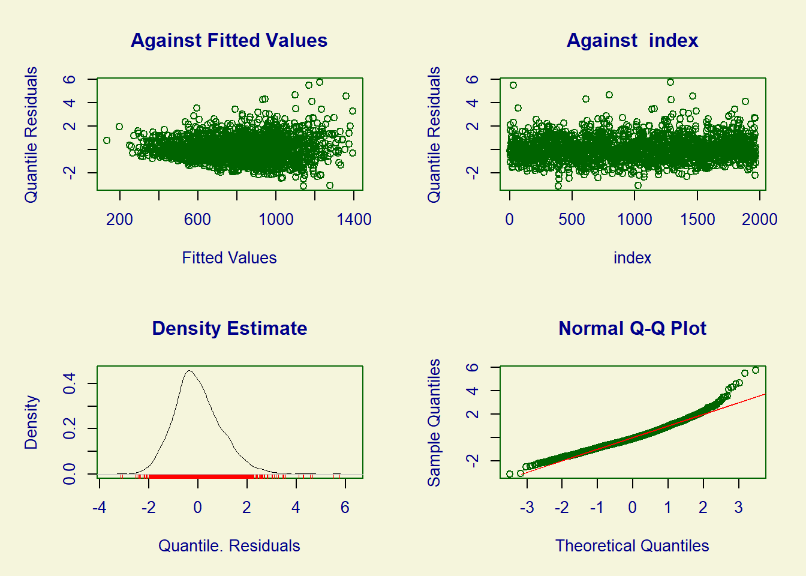
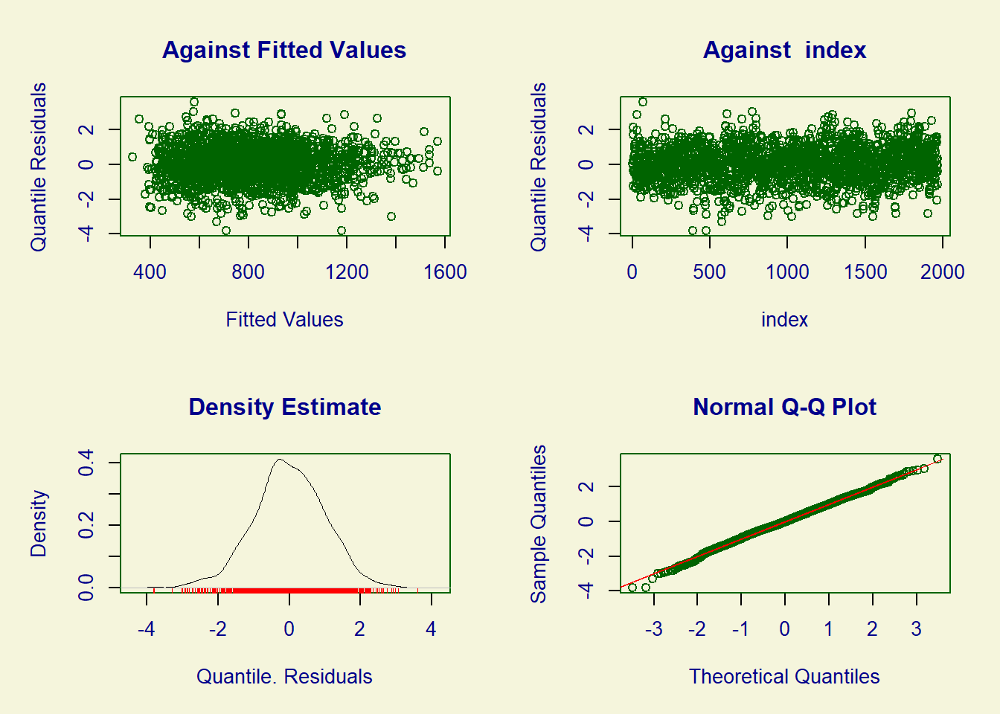
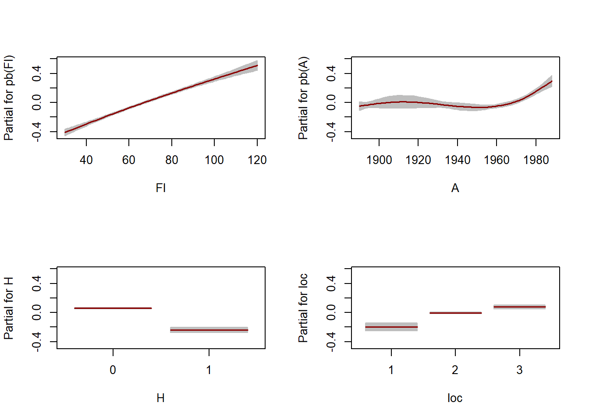
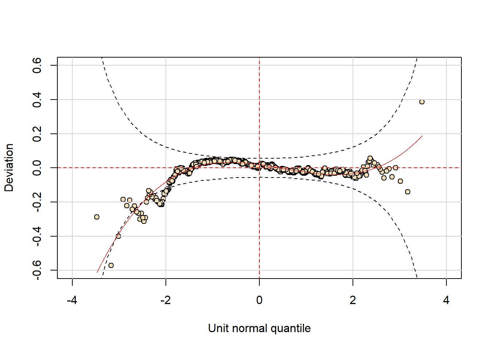
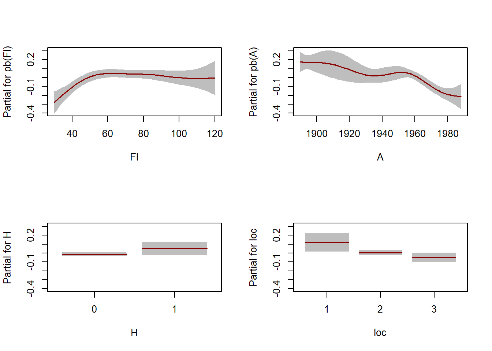
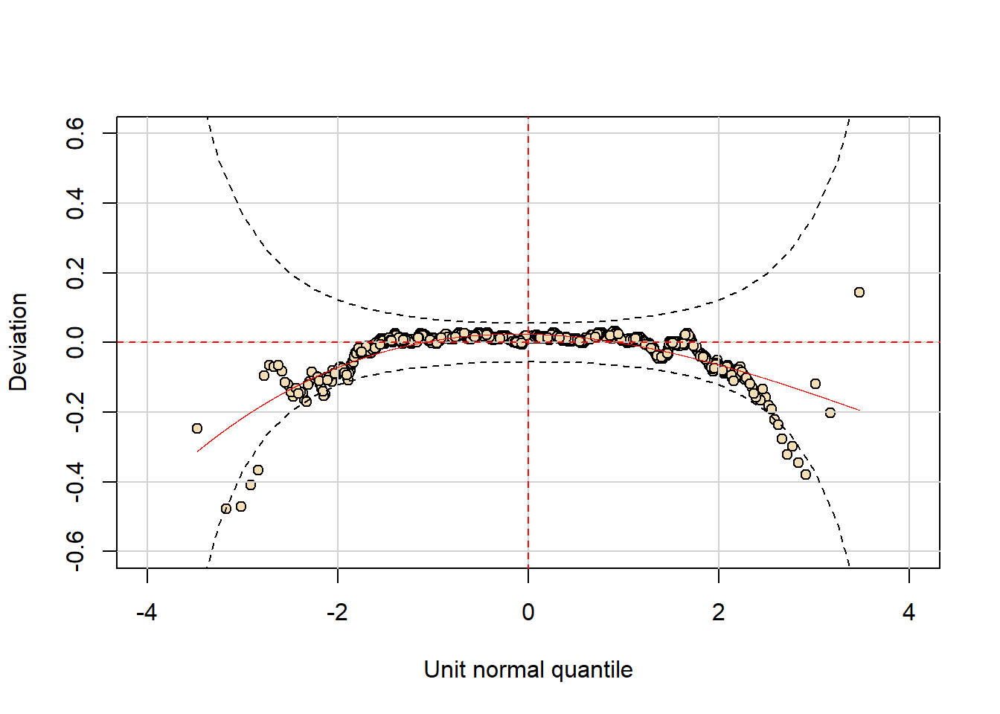
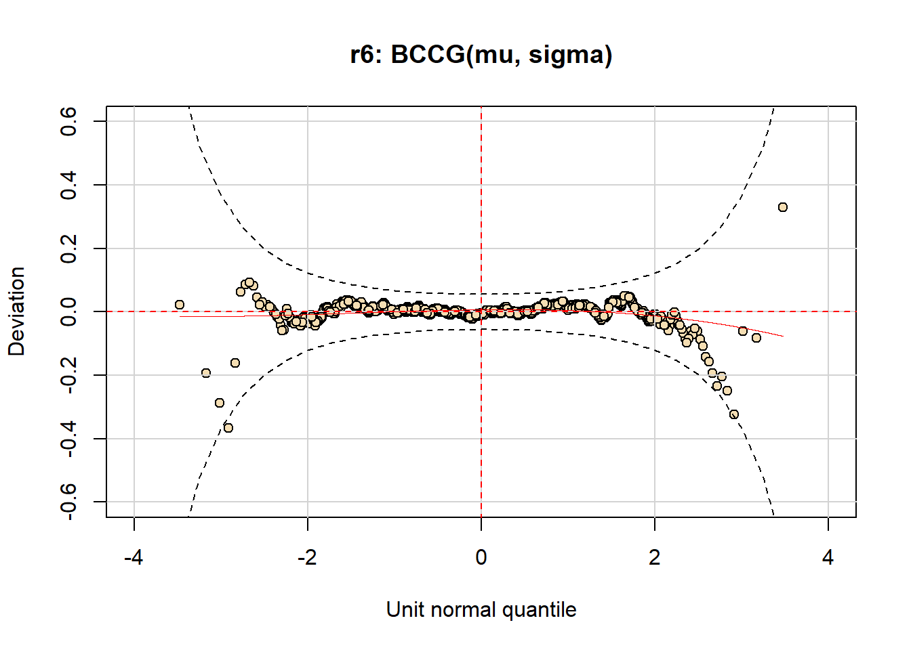
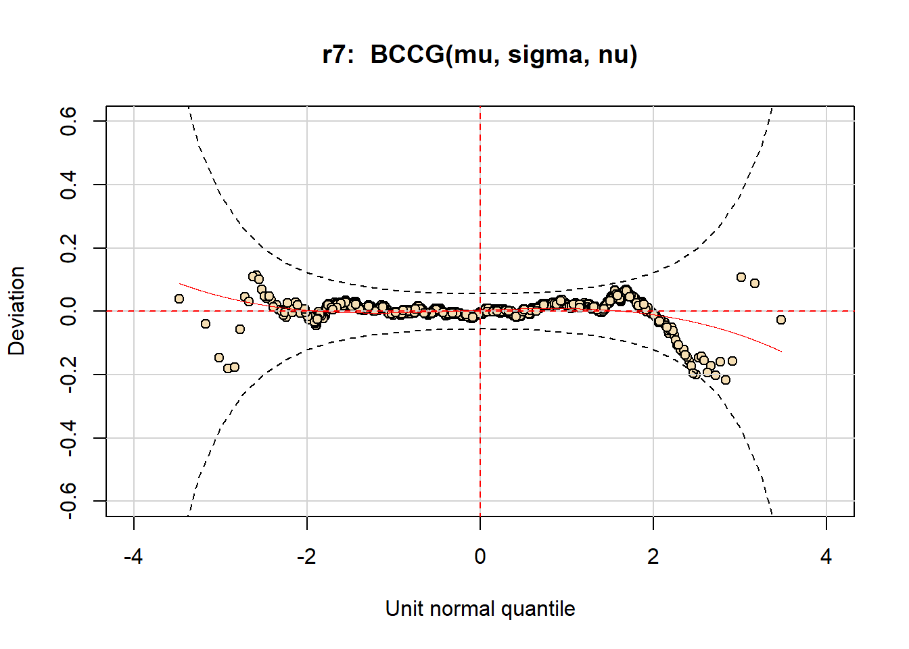

Introdução ao GAMLSS
2023-03-14
Capítulo 1 Introdução
library(knitr)
library(gamlss)
library(xtable)
PPP <- par(mfrow=c(2,2))
plot(R~Fl, data=rent, col=gray(0.7), pch=15, cex=0.5)
plot(R~A, data=rent, col=gray(0.7), pch=15, cex=0.5)
plot(R~H, data=rent, col=gray(0.7), pch=15, cex=0.5)
plot(R~loc, data=rent, col=gray(0.7), pch=15, cex=0.5) 
par(PPP)
# ----eval=FALSE----------------------------------------------------------
## R ~ Fl+A+H+loc
## ----cache=TRUE----------------------------------------------------------
r1 <- gamlss(R ~ Fl+A+H+loc, family=NO, data=rent, trace=FALSE)
l1 <- lm(R ~ Fl+A+H+loc,data=rent)
coef(r1)## (Intercept) Fl A H1 loc2 loc3
## -2775.038803 8.839445 1.480755 -204.759562 134.052349 209.581472coef(l1)## (Intercept) Fl A H1 loc2 loc3
## -2775.038803 8.839445 1.480755 -204.759562 134.052349 209.581472fitted(r1, "sigma")[1]## 1
## 308.4768summary(r1)## ******************************************************************
## Family: c("NO", "Normal")
##
## Call: gamlss(formula = R ~ Fl + A + H + loc, family = NO,
## data = rent, trace = FALSE)
##
## Fitting method: RS()
##
## ------------------------------------------------------------------
## Mu link function: identity
## Mu Coefficients:
## Estimate Std. Error t value Pr(>|t|)
## (Intercept) -2775.0388 470.1352 -5.903 4.20e-09 ***
## Fl 8.8394 0.3370 26.228 < 2e-16 ***
## A 1.4808 0.2385 6.208 6.55e-10 ***
## H1 -204.7596 18.9858 -10.785 < 2e-16 ***
## loc2 134.0523 25.1430 5.332 1.09e-07 ***
## loc3 209.5815 27.1286 7.725 1.76e-14 ***
## ---
## Signif. codes: 0 '***' 0.001 '**' 0.01 '*' 0.05 '.' 0.1 ' ' 1
##
## ------------------------------------------------------------------
## Sigma link function: log
## Sigma Coefficients:
## Estimate Std. Error t value Pr(>|t|)
## (Intercept) 5.73165 0.01594 359.7 <2e-16 ***
## ---
## Signif. codes: 0 '***' 0.001 '**' 0.01 '*' 0.05 '.' 0.1 ' ' 1
##
## ------------------------------------------------------------------
## No. of observations in the fit: 1969
## Degrees of Freedom for the fit: 7
## Residual Deg. of Freedom: 1962
## at cycle: 2
##
## Global Deviance: 28159
## AIC: 28173
## SBC: 28212.1
## ******************************************************************Rsq(r1)## [1] 0.3372028## ----LM_residual_plot,echo=TRUE,fig.show='hide', fig.asp=1---------------
plot(r1)
## ******************************************************************
## Summary of the Quantile Residuals
## mean = 4.959554e-13
## variance = 1.000508
## coef. of skewness = 0.7470097
## coef. of kurtosis = 4.844416
## Filliben correlation coefficient = 0.9859819
## ******************************************************************## ----cache=TRUE----------------------------------------------------------
### using gamlss
r2 <- gamlss(R ~ Fl+A+H+loc, family=GA, data=rent)## GAMLSS-RS iteration 1: Global Deviance = 27764.59
## GAMLSS-RS iteration 2: Global Deviance = 27764.59coef(r2)## (Intercept) Fl A H1 loc2 loc3
## 2.86497701 0.01062319 0.00151005 -0.30007446 0.19076406 0.26408285coef(r2, "sigma") ### extract log(sigma)## (Intercept)
## -0.9821991deviance(r2)## [1] 27764.59### using glm
l2 <- glm(R ~ Fl+A+H+loc, family=Gamma(link="log"), data=rent)
coef(l2)## (Intercept) Fl A H1 loc2 loc3
## 2.864943806 0.010623194 0.001510066 -0.300074001 0.190764594 0.264083376summary(l2)$dispersion ### extract phi## [1] 0.1377881deviance(l2)## [1] 282.5747## ------------------------------------------------------------------------
summary(r2)## ******************************************************************
## Family: c("GA", "Gamma")
##
## Call: gamlss(formula = R ~ Fl + A + H + loc, family = GA, data = rent)
##
## Fitting method: RS()
##
## ------------------------------------------------------------------
## Mu link function: log
## Mu Coefficients:
## Estimate Std. Error t value Pr(>|t|)
## (Intercept) 2.8649770 0.5681289 5.043 5.01e-07 ***
## Fl 0.0106232 0.0004128 25.735 < 2e-16 ***
## A 0.0015100 0.0002886 5.232 1.85e-07 ***
## H1 -0.3000745 0.0231153 -12.982 < 2e-16 ***
## loc2 0.1907641 0.0305203 6.250 5.01e-10 ***
## loc3 0.2640828 0.0329197 8.022 1.77e-15 ***
## ---
## Signif. codes: 0 '***' 0.001 '**' 0.01 '*' 0.05 '.' 0.1 ' ' 1
##
## ------------------------------------------------------------------
## Sigma link function: log
## Sigma Coefficients:
## Estimate Std. Error t value Pr(>|t|)
## (Intercept) -0.98220 0.01558 -63.05 <2e-16 ***
## ---
## Signif. codes: 0 '***' 0.001 '**' 0.01 '*' 0.05 '.' 0.1 ' ' 1
##
## ------------------------------------------------------------------
## No. of observations in the fit: 1969
## Degrees of Freedom for the fit: 7
## Residual Deg. of Freedom: 1962
## at cycle: 2
##
## Global Deviance: 27764.59
## AIC: 27778.59
## SBC: 27817.69
## ******************************************************************## ------------------------------------------------------------------------
r22 <- gamlss(R ~ Fl+A+H+loc, family=IG, data=rent, trace=FALSE)
GAIC(r1, r2, r22, k=0) # GD## df AIC
## r2 7 27764.59
## r22 7 27991.56
## r1 7 28159.00## ----GLM_residual_plot,echo=TRUE,fig.show='hide', fig.asp=1--------------
plot(r2)
## ******************************************************************
## Summary of the Quantile Residuals
## mean = 0.0004795675
## variance = 1.000657
## coef. of skewness = -0.1079453
## coef. of kurtosis = 3.255464
## Filliben correlation coefficient = 0.9990857
## ******************************************************************## ----cache=TRUE----------------------------------------------------------
r3 <- gamlss(R ~ pb(Fl)+pb(A)+H+loc, family=GA, data=rent,
trace=FALSE)
AIC(r2,r3)## df AIC
## r3 11.21547 27705.65
## r2 7.00000 27778.59## ------------------------------------------------------------------------
summary(r3)## ******************************************************************
## Family: c("GA", "Gamma")
##
## Call: gamlss(formula = R ~ pb(Fl) + pb(A) + H + loc, family = GA,
## data = rent, trace = FALSE)
##
## Fitting method: RS()
##
## ------------------------------------------------------------------
## Mu link function: log
## Mu Coefficients:
## Estimate Std. Error t value Pr(>|t|)
## (Intercept) 3.0851197 0.5692315 5.420 6.70e-08 ***
## pb(Fl) 0.0103084 0.0004031 25.573 < 2e-16 ***
## pb(A) 0.0014062 0.0002893 4.861 1.26e-06 ***
## H1 -0.3008111 0.0225869 -13.318 < 2e-16 ***
## loc2 0.1886692 0.0299295 6.304 3.58e-10 ***
## loc3 0.2719856 0.0322862 8.424 < 2e-16 ***
## ---
## Signif. codes: 0 '***' 0.001 '**' 0.01 '*' 0.05 '.' 0.1 ' ' 1
##
## ------------------------------------------------------------------
## Sigma link function: log
## Sigma Coefficients:
## Estimate Std. Error t value Pr(>|t|)
## (Intercept) -1.00196 0.01559 -64.27 <2e-16 ***
## ---
## Signif. codes: 0 '***' 0.001 '**' 0.01 '*' 0.05 '.' 0.1 ' ' 1
##
## ------------------------------------------------------------------
## NOTE: Additive smoothing terms exist in the formulas:
## i) Std. Error for smoothers are for the linear effect only.
## ii) Std. Error for the linear terms maybe are not accurate.
## ------------------------------------------------------------------
## No. of observations in the fit: 1969
## Degrees of Freedom for the fit: 11.21547
## Residual Deg. of Freedom: 1957.785
## at cycle: 3
##
## Global Deviance: 27683.22
## AIC: 27705.65
## SBC: 27768.29
## ******************************************************************## ----cache=TRUE----------------------------------------------------------
drop1(r3) ## Single term deletions for
## mu
##
## Model:
## R ~ pb(Fl) + pb(A) + H + loc
## Df AIC LRT Pr(Chi)
## <none> 27706
## pb(Fl) 1.4680 28261 558.59 < 2.2e-16 ***
## pb(A) 4.3149 27798 101.14 < 2.2e-16 ***
## H 1.8445 27862 160.39 < 2.2e-16 ***
## loc 2.0346 27770 68.02 1.825e-15 ***
## ---
## Signif. codes: 0 '***' 0.001 '**' 0.01 '*' 0.05 '.' 0.1 ' ' 1## ----GAM_termplot, echo=TRUE,fig.show='hide', fig.asp=1,cache=TRUE-------
term.plot(r3, pages=1, ask=FALSE)
## ----GAM_wormplot, echo=TRUE,fig.show='hide', fig.asp=1,cache=TRUE-------
wp(r3, ylim.all=.6)
## ----cache=TRUE----------------------------------------------------------
r4 <- gamlss(R ~ pb(Fl)+pb(A)+H+loc, sigma.fo=~pb(Fl)+pb(A)+H+loc,
family=GA, data=rent, trace=FALSE)
r5 <- gamlss(R ~ pb(Fl)+pb(A)+H+loc, sigma.fo=~pb(Fl)+pb(A)+H+loc,
family=IG, data=rent, trace=FALSE)
AIC(r3, r4, r5)## df AIC
## r4 22.25035 27614.78
## r3 11.21547 27705.65
## r5 21.82318 27716.66## ----MADAM_termplot, echo=TRUE,fig.show='hide', fig.asp=1,cache=TRUE-----
term.plot(r4, pages=1, what="sigma", ask=FALSE)
## ----cache=TRUE----------------------------------------------------------
drop1(r4, what="sigma")## Single term deletions for
## sigma
##
## Model:
## ~pb(Fl) + pb(A) + H + loc
## Df AIC LRT Pr(Chi)
## <none> 27615
## pb(Fl) 4.02694 27631 24.683 5.997e-05 ***
## pb(A) 3.87807 27659 52.167 1.067e-10 ***
## H 0.88335 27615 1.866 0.14788
## loc 2.03694 27619 8.036 0.01872 *
## ---
## Signif. codes: 0 '***' 0.001 '**' 0.01 '*' 0.05 '.' 0.1 ' ' 1## ----MADAM_wormplot, echo=TRUE,fig.show='hide', fig.asp=1,cache=TRUE-----
wp(r4, ylim.all=.6)
## ----cache=TRUE----------------------------------------------------------
r6 <- gamlss(R ~ pb(Fl)+pb(A)+H+loc, sigma.fo=~pb(Fl)+pb(A)+H+loc,
nu.fo=~1, family=BCCGo, data=rent, trace=FALSE)
r7 <- gamlss(R ~ pb(Fl)+pb(A)+H+loc,sigma.fo=~pb(Fl)+pb(A)+H+loc,
nu.fo=~pb(Fl)+pb(A)+H+loc, family=BCCGo, data=rent,
trace=FALSE)
AIC(r4, r6, r7)## df AIC
## r7 28.41391 27608.15
## r6 22.48092 27611.02
## r4 22.25035 27614.78## ----WP_BCCG1_CH1, echo=TRUE, fig.show='hide', fig.asp=1-----------------
wp(r6, ylim.all=.6) ; title("r6: BCCG(mu, sigma)")
wp(r7, ylim.all=.6) ; title("r7: BCCG(mu, sigma, nu)")
1.1 exercises Chapter 1
## data(airquality)
## plot(airquality[,-c(5,6)])
## # Fit the standard linear model
## air.lm <- lm(Ozone~Temp+Wind+Solar.R,data=airquality)
## summary(air.lm)
## op<-par(mfrow=c(1,3))
## termplot(air.lm,partial.resid=TRUE,se=T)
## par(op)
## op<-par(mfrow=c(1,2))
## plot(air.lm,which=1:2)
## par(op)
## library(gamlss)
## da <- na.omit(airquality) # clear the data of NA's
## mno<-gamlss(Ozone~Temp+Wind+Solar.R, data=da) # fit the model
## summary(mno)
## term.plot(mno, pages=1, partial=T) # plot the fitted terms
## plot(mno)
## wp(mno)
## # fit different distributions
## mga <- gamlss(Ozone~Temp+Wind+Solar.R, data=da, family=GA)
## mig <- gamlss(Ozone~Temp+Wind+Solar.R, data=da, family=IG)
## mbccg <- gamlss(Ozone~Temp+Wind+Solar.R, data=da, family=BCCGo)
## GAIC(mno, mga, mig, mbccg)
## # fit smoothers
## mga1=gamlss(Ozone~pb(Temp)+pb(Wind)+pb(Solar.R),data=da,
## family=GA)
## term.plot(mga1, pages=1)
## plot(mga1)
## wp(mga1)1.2 gamlss.demo()
#install.packages("gamlss.demo", dep=TRUE)
#Based on rpanel
library(gamlss.demo)
#Examples
#t family distribution
demo.TF()
#Skew Normal Type 1 distribution
demo.SN1()
#Box-Cox Power Exponential distribution
demo.BCPE()
#Demos for smoothing techniques
demo.BSplines()
demo.PSplines()
demo.interpolateSmo()
demo.histSmo()
#Interface for demonstrating the gamlss.family distributions
demoDist()
#Demo for local polynomial smoothing
demoLpolyS()
#The demo for gamlss distributions and smoothing
gamlss.demo()